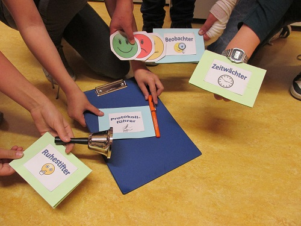
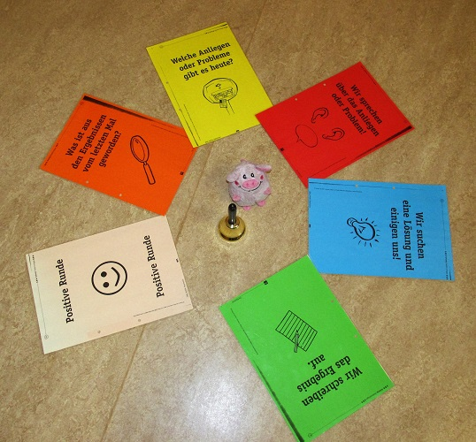

über uns
Projekte
Freizeit
Der Klassenrat
Konflikte und Streit unter Schülern gehören zum Schulalltag dazu. Aber wie gehen wir damit um? Wie lernen unsere Schüler in bestimmten Situationen angemessen zu reagieren und anderen zu helfen – fair untereinander zu sein. Um eigenständige, konstruktive Lösungen zu finden, praktiziert regelmäßig der Klassenrat in den 5. und 6. Klassen. Unterstützt werden Sie dabei seit November 2011 von unserer Schulsozialarbeiterin Frau Kruspe.
Was bedeutet Klassenrat?
In regelmäßigen Abständen (1 x wöchentlich) versammelt sich die gesamte Klasse im Kreis, um die Angelegenheiten zu regeln, die sie betreffen: als Individuen, die sich in ihrer Klasse ernst genommen fühlen sollen, als Kinder, die ein Interesse daran haben, ihre Gemeinschaft zu gestalten, als Menschen, die nur dann gut miteinander lernen und leben können, wenn Konflikte konstruktiv ausgetragen werden. Der Klassenrat ist gelebte Demokratie, ein Raum, in dem Schülerinnen und Schüler und ihre LehrerInnen nicht über Demokratie sprechen, sondern Demokratie praktizieren. Und dies nicht „aus dem hohlen Bauch heraus“, dem eigenen Geschick oder der Situation überlassen, sondern in einem Sicherheit vermittelnden, klar strukturierten Rahmen.
Was bewirkt ein Klassenrat?
SchülerInnen lernen durch die Praxis des Klassenrates ihre Meinung zu äußern und sich mit anderen auseinanderzusetzen. Sie lernen, Konflikte konstruktiv zu lösen, Verantwortung für ihr Handeln zu übernehmen, im Team zu arbeiten. Sie erfahren, dass sie auch als Persönlichkeiten in der Schule ernst genommen werden und ihre Anliegen einen festen Platz haben. Sie erleben und entwickeln Toleranz, lernen, sich selbst zu steuern und ein Gespräch zu moderieren.
Der Klassenrat ermöglicht einen guten Unterricht durch
- ein positives Klassen- und Lernklima
- die Stärkung der Klassengemeinschaft
- Gewaltprävention
Der Klassenrat entlastet die Lehrkraft durch
- Vertagen und Konzentration der Anliegen und Probleme auf die Klassenratsstunde
- Teilen der Verantwortung
Text: Silvana Kruspe